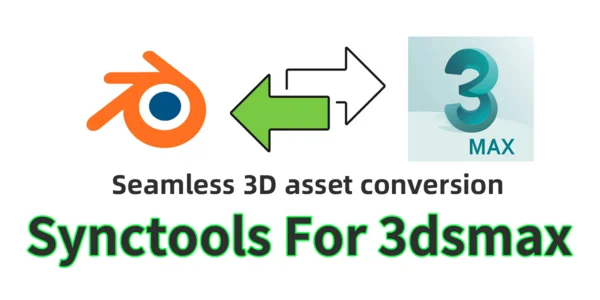
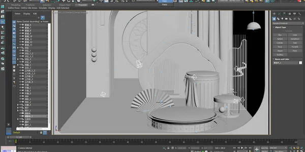
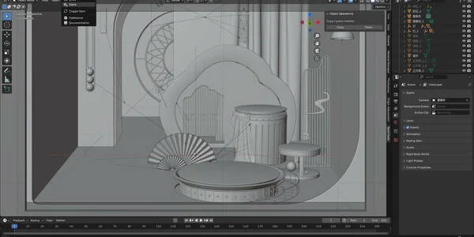
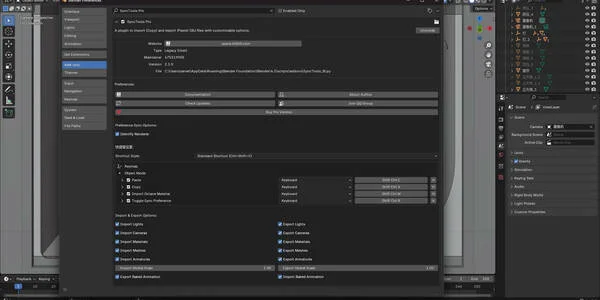
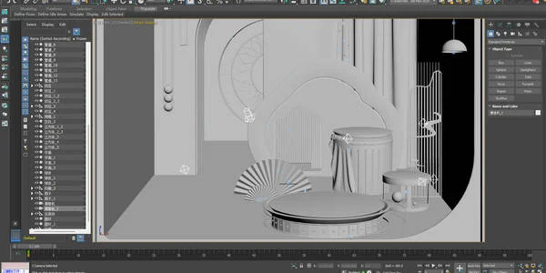
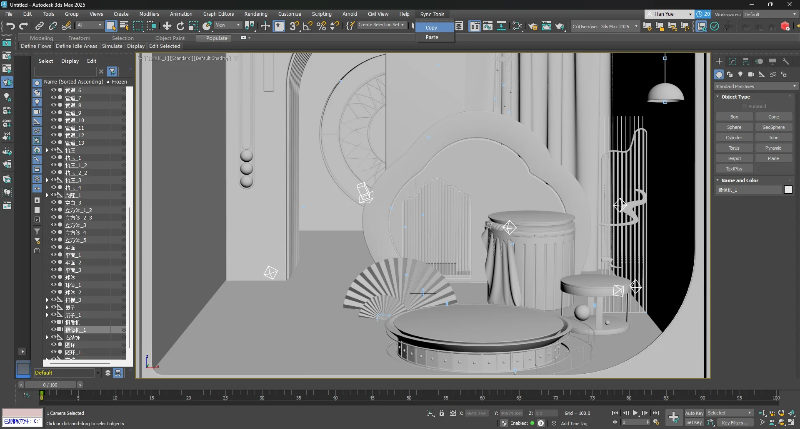
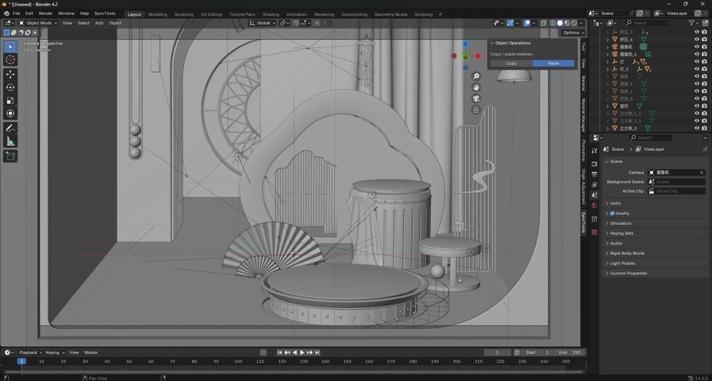

SyncTools Pro 是一款跨软件工具，旨在简化不同应用程序之间复制和粘贴详细场景数据的流程。只需一键，即可将对象（包括网格、灯光、摄像机、材质、动画等）从一个场景导出并导入到另一个场景。这为您的制作工作流程节省了大量时间和精力。
所有插件均采用统一的数据交换协议，实现跨平台无损资产转换和真正的多软件协同工作流程。


SyncTools_max.py上安装成功后, you’ll find "Sync Tools" 在菜单栏中.
1️⃣ 单位系统: 建议使用公制（米）.
2️⃣ 轴向转换: 自动处理 Y-上 ↔ Z-上 转换.
3️⃣ 材质映射: 自动标准材质转换.
4️⃣ 命名规范: 特殊字符（@#%）可能导致导入问题.
5️⃣ 插件依赖: 需要匹配的 SyncTools 版本.
(数据通过 FBX 中间件转换 – 请查看发行说明以获取最新兼容性更新.)
SyncTools Pro 旨在为 3ds Max 提供无缝高效的场景数据传输方法。 通过简单的复制和粘贴操作，您可以轻松交换详细的场景信息，简化创作流程。 使用 SyncTools Pro，享受更高效的工作流程！
如需进一步帮助，请随时联系我们。
1. 将脚本存储到正确位置
在本地找到脚本文件，例如命名为 SyncTools_max.py.
将文件复制或移动到 3ds Max 的脚本文件夹。常见的做法是放在以下目录之一：
安装目录下的 Scripts 文件夹，例如：
C:\Program Files\Autodesk\3ds Max \Scripts 用户文档中的 scripts 文件夹，例如：
C:\Users\\Documents\3dsMax\scripts (可选）如果希望脚本在每次启动 3ds Max 时自动加载，请将脚本直接放在 Startup 文件夹中，例如：
C:\Program Files\Autodesk\3ds Max \Scripts\Startup 提示：如果不想让脚本每次都自动加载，可以将脚本存储在常规的
Scripts文件夹中，需要时手动运行即可.
SyncTools_max.py 文件，然后点击"打开"。Startup 文件夹中，脚本将在 3ds Max 启动时自动执行并创建菜单，无需手动运行。Documents/cache），以便后续粘贴使用。